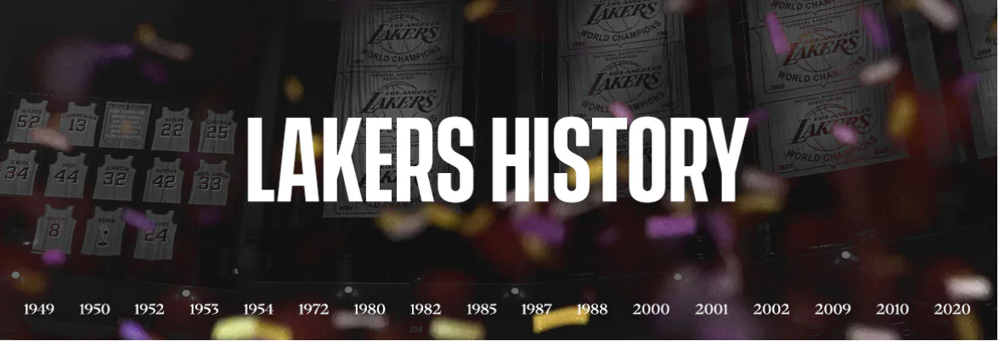
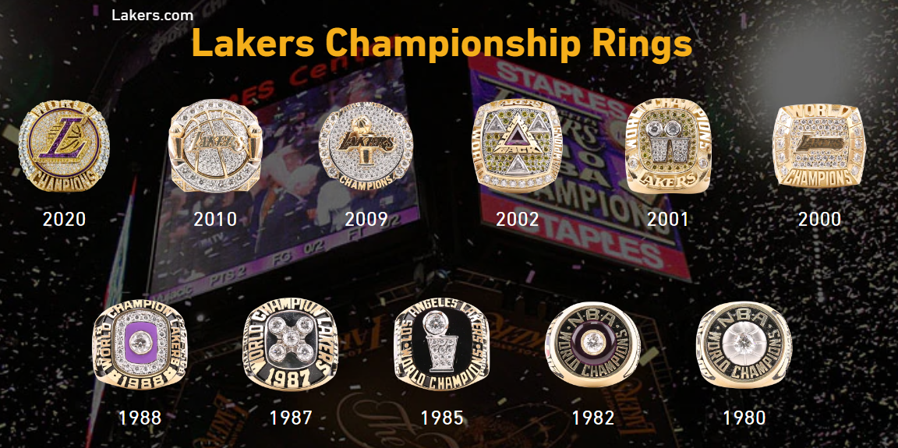
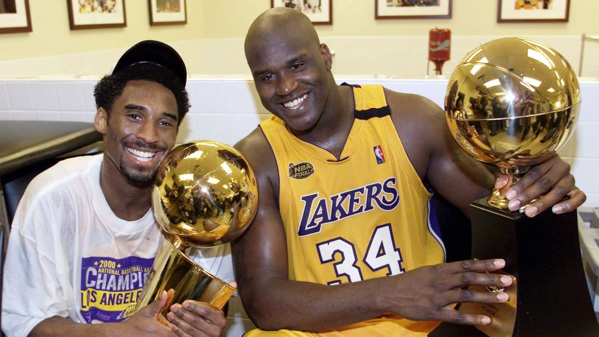

The Los Angeles Lakers franchise has a long and storied history, predating the formation of the National Basketball Association (NBA).Founded in 1947, the Lakers are one of the NBA's most famous and successful franchises. As of summer 2012, the Lakers hold the all-time records for wins (3,125), winning percentage (.620), and NBA Finals appearances (32). They are tied in NBA championships with the Boston Celtics, winning 17 NBA titles and making far more finals appearances than their biggest rival (15 vs 4 in being runner up), effectively making them the most successful to date.

Each and every ring is adorned with a piece of the actual ball used in game seven of the 2010 NBA Finals. The two Larry O'Brien trophies representing the back to back titles are made from a custom batch of 16kt gold. 16 oversized round brillant white diamonds indicate the 16 championships the franchise has won. Each player is immortalized with a three dimensional sculpture of their face on their respective rings. The final score of the Lakers 83-79 game seven victory over the Boston Celtics is represented on the side of the ring in scoreboard fashion.
